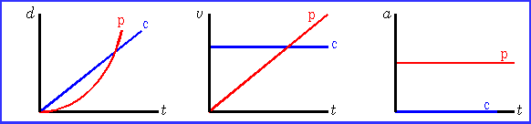

Car Chase
A car (c) with one headlight burned
out is traveling at a constant speed of 18 m/s and passes a stopped
police car (p). The car is pursued
immediately by the police cruiser, which has a constant acceleration
of magnitude 2.2 m/s2.
(a) How far does the police cruiser travel before catching the
other car?
(b) At what time will this occur? (Hint: Graphing may help to
visualize this)

The expression relating the car's position
(xc) to the time (t) is BEST represented by:
(a) xc = x0c
+ v0ct, with x0c = 0
(b) xc = x0c
+ v0ct + ½ at2, with
x0c = 0